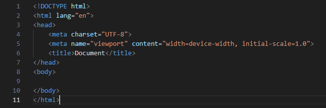

Criar Uma Página Web Utilizando as Tags Aprendidas
Índice
Meu Guia Sobre HTML
História dos computadores
1. Antes do computador como conhecemos
Muito antes de existir algo eletrônico, o ser humano já criava máquinas para calcular:
- Ábaco (c. 2400 a.C.): usado por chineses, sumérios e egípcios para somas e subtrações.
- Máquina de Pascal (1642): inventada por Blaise Pascal, fazia operações mecânicas básicas.
- Máquina de Leibniz (1673): podia multiplicar e dividir.
- Máquina Analítica de Charles Babbage (1837): projeto de um computador mecânico programável, que nunca foi concluído na época, mas é considerado o "pai do computador".
- Cartões perfurados (final do século XIX): usados por Herman Hollerith para tabulação do censo dos EUA de 1890 — uma tecnologia que mais tarde influenciou a IBM.
2. A era eletromecânica (década de 1930-40)
Durante a Segunda Guerra Mundial, a necessidade de cálculos rápidos acelerou o desenvolvimento:
- Zuse Z3 (1941): criado por Konrad Zuse, é considerado o primeiro computador programável eletromecânico.
- Harvard Mark I (1944): computador eletromecânico usado pela marinha americana.
- Colossus (1943-44): computador britânico usado para quebrar códigos nazistas.
- ENIAC (1946): primeiro computador eletrônico de propósito geral, ocupava uma sala inteira e usava milhares de válvulas.
3. Gerações de computadores
A história da computação costuma ser dividida em gerações, baseadas na tecnologia usada:
- Primeira geração (1940-1956)
- Tecnologia: válvulas eletrônicas.
- Programação por cartões perfurados e painéis de fios.
- Exemplo: ENIAC, UNIVAC I.
- Segunda geração (1956-1963)
- Tecnologia: transistores (menores, mais rápidos, menos calor).
- Surgem linguagens como COBOL e FORTRAN.
- Computadores mais confiáveis e comerciais.
- Terceira geração (1964-1971)
- Tecnologia: circuitos integrados.
- Sistemas operacionais multitarefa.
- Começam a aparecer computadores menores e mais acessíveis.
- Quarta geração (1971-presente)
- Tecnologia: microprocessadores.
- Surge o computador pessoal (PC).
- Apple II (1977), IBM PC (1981) popularizam o uso doméstico e empresarial.
- Quinta geração (presente e futuro)
- Baseada em inteligência artificial, computação quântica e máquinas altamente paralelas.
- Dispositivos conectados, aprendizado de máquina, cloud computing.
4. Era da popularização e internet
- Década de 1980: PC se torna comum em empresas e escolas.
- Década de 1990: internet comercial começa a se espalhar; surgem navegadores como Netscape e depois Internet Explorer.
- Década de 2000: avanço de notebooks, Wi-Fi e redes sociais.
- Década de 2010: smartphones e tablets se tornam computadores de bolso; nuvem e IA ganham força.
5. Hoje e além
Atualmente, temos:
- Computadores potentes no bolso (smartphones).
- Inteligência artificial capaz de gerar texto, imagens, código e tomar decisões complexas.
- Computação quântica em desenvolvimento, prometendo resolver problemas impossíveis para computadores tradicionais.
- Dispositivos integrados à vida cotidiana (IoT, wearables, carros autônomos).
(Voltar)
O que são Clients e Servers?
1. Conceito de Client e Server
No linguajar da web:
-
Client (cliente) → É quem consome o serviço.
Pode ser um navegador, aplicativo de celular, ou até outro sistema.
Ele envia requisições (pedidos) para o servidor e exibe ou processa a resposta.
Ex.: Chrome acessando o Google, um app de delivery pedindo a lista de restaurantes.
-
Server (servidor)→ É quem fornece o serviço.
Recebe a requisição, processa, busca dados e envia uma resposta.
Ex.: Os computadores do Google que recebem seu pedido de busca e enviam os resultados.
2. Client na prática
Navegadores (Browsers)
- Interpretam o HTML, aplicam o CSS e executam o JavaScript recebidos do servidor.
- Exemplos: Google Chrome, Mozilla Firefox, Safari, Microsoft Edge, Opera.
- São clients universais para web, compatíveis com padrões (W3C).
Aplicações Web
- Rodam dentro do navegador.
- Podem ser simples (site institucional) ou complexas (Google Docs, Trello).
- Muitas usam frameworks JavaScript como React, Angular, Vue para mais interatividade.
Dispositivos móveis
- Clientes podem ser apps nativos (Android, iOS) ou PWA (Progressive Web App).
- Apps nativos podem consumir APIs do servidor para funcionar.
3. Linguagens de programação do lado Client
Executadas no navegador ou dispositivo do usuário:
- HTML → Estrutura da página (não é linguagem de programação, mas de marcação).
- CSS → Estilo e layout.
- JavaScript → Interatividade e lógica.
- TypeScript (compila para JS).
- WebAssembly → Executa código de linguagens como C++/Rust no browser.
4. Server na prática
Hardware de Servidores
- Físicos: Máquinas potentes com processadores para múltiplas tarefas, muito RAM e armazenamento rápido (SSD/NVMe).
- Virtuais (VPS / Cloud): Uma máquina física dividida em várias virtuais.
- Servidores podem estar em data centers espalhados pelo mundo.
Softwares de Servidor
- Sistema Operacional: Linux (Ubuntu, CentOS, Debian) ou Windows Server.
- Servidor Web: Apache, Nginx, LiteSpeed, IIS.
- Banco de Dados: MySQL, PostgreSQL, MongoDB, Redis.
- Serviços adicionais: Cache, balanceamento de carga, segurança.
Tipos de Servidores
- Web Server: Hospeda sites e APIs (Apache, Nginx).
- Banco de Dados: Gerencia dados estruturados (MySQL, PostgreSQL).
- Aplicação: Processa regras de negócio (Node.js, PHP-FPM, Java).
- Email Server: Envia/recebe e-mails (Postfix, Exim).
- FTP/SFTP Server: Transferência de arquivos.
- Game Server: Hospeda partidas de jogos online.
5. Hospedagem de Sites
Formas comuns:
- Hospedagem Compartilhada → Vários sites no mesmo servidor (mais barato, menos controle).
- VPS (Virtual Private Server) → Servidor virtual exclusivo, mais controle.
- Servidor Dedicado → Máquina física inteira para você.
- Cloud Hosting → Infraestrutura escalável (AWS, Azure, Google Cloud).
- Serverless → Você só paga pela execução de código (AWS Lambda, Vercel Functions).
6. Linguagens de programação do lado Server
Rodam no servidor, processam dados e enviam respostas ao cliente:
- JavaScript (Node.js) → Executa JS no backend.
- PHP → Muito usado em WordPress, Laravel.
- Python → Django, Flask, FastAPI.
- Java → Spring Boot, aplicações corporativas.
- C# (.NET Core) → Aplicações corporativas e APIs.
- Ruby → Ruby on Rails.
- Go → Rápido e escalável.
- Rust → Alta performance e segurança.
Resumo visual
[CLIENTE] → Navegador/App → HTML, CSS, JS → Solicita dados
↓
Internet
↑
[SERVER] → Apache/Nginx + Linguagem backend → Banco de Dados → Resposta
(Voltar)
Ferramentas que gosto de utilizar e Inspetor de Elementos
1. VS Code (Visual Studio Code)
O que é:
Um editor de código gratuito criado pela Microsoft, muito usado por desenvolvedores web, pois é leve, rápido e cheio de extensões que facilitam o trabalho.
Por que é importante para HTML:
- Tem destaque de sintaxe (colorindo tags, atributos e valores).
- Sugestões automáticas (autocompletar tags, atributos e valores).
- Integra facilmente com extensões como o Live Server.
- Possui atalhos que aceleram o processo de escrever código.
💡 Resumo: É sua “mesa de trabalho” no mundo do código.
2. Live Server (extensão)
Por que é importante:
- Evita ter que ficar fechando e abrindo o arquivo no navegador sempre que fizer uma mudança.
- Simula o funcionamento real de um site, porque roda num servidor local.
- Atualização instantânea: você vê o resultado em tempo real.
💡 Resumo: É como ter um “modo espelho” do seu código no navegador.
3. Inspetor de Elementos (DevTools)
O que é:
Uma ferramenta embutida nos navegadores modernos (Chrome, Edge, Firefox) que permite ver e manipular o código HTML, CSS e JavaScript da página carregada.
Por que é importante:
- Permite inspecionar elementos da página e ver o HTML e CSS aplicados.
- Você pode alterar o código ao vivo para testar mudanças antes de colocar no arquivo real.
- Tem painel de console para ver erros do JavaScript..
- Ajuda a debugar (resolver problemas) de layout, estilos e scripts.
💡 Resumo: É como uma lupa e caixa de ferramentas para entender o que está acontecendo no seu site.
🔗 Como tudo se conecta no desenvolvimento HTML:
- Você escreve o código no VS Code.
- Você executa com o Live Server para ver em tempo real.
- Você analisa, testa e corrige com o Inspetor de Elementos.
(Voltar)
Como é uma estrutura básica de um HTML?

1. !DOCTYPE html
- Diz ao navegador qual versão do HTML está sendo usada.
- Neste caso, html indica que estamos usando HTML5, que é a versão atual e padrão.
- Não é uma tag HTML, é apenas uma instrução para o navegador.
2. html lang="en" ... html
- Marca o início e o fim do documento HTML.
- O atributo lang="en" indica que o idioma principal do conteúdo é inglês (en = English).
- Se fosse em português, poderia ser lang="pt-BR".
3. head ... head
- Contém informações sobre a página (metadados), que não aparecem diretamente para o usuário.
- Aqui ficam:
- Configurações de codificação de texto.
- Ajustes para dispositivos móveis.
- Título da página.
- Links para arquivos CSS, scripts, ícones etc.
Dentro dele temos:
3.1 meta charset="UTF-8"
- Define a codificação de caracteres da página.
- UTF-8 suporta praticamente todos os caracteres e acentos (importante para português).
3.2 meta name="viewport" content="width=device-width, initial-scale=1.0"
- Faz a página se adaptar a diferentes tamanhos de tela (responsividade).
- width=device-width ajusta a largura ao tamanho da tela do dispositivo.
- initial-scale=1.0 define o nível inicial de zoom.
3.3 title Document title
- Define o título que aparece na aba do navegador.
- Também é usado pelos buscadores (Google, Bing etc.) como título nos resultados de pesquisa.
4. body ... body
- É onde vai todo o conteúdo visível da página: textos, imagens, links, vídeos, botões, formulários etc.
💡 Resumindo a lógica:
!DOCTYPE html → Versão do HTML
html → Tudo do site está aqui
head → Informações sobre a página
body → Conteúdo que o usuário vê
(Voltar)
Em HTML, tags e atributos de tags são duas coisas diferentes, mas que trabalham juntas para definir a estrutura e o comportamento dos elementos na página.
1. O que são tags
- • As tags (ou “etiquetas”) são marcadores usados para dizer ao navegador o que é aquele conteúdo e como ele deve ser interpretado.
- • Geralmente aparecem entre sinais de menor < e maior >.
2. O que são atributos de tags
💡 Resumindo:
(Voltar)
Links de referências
(Voltar)